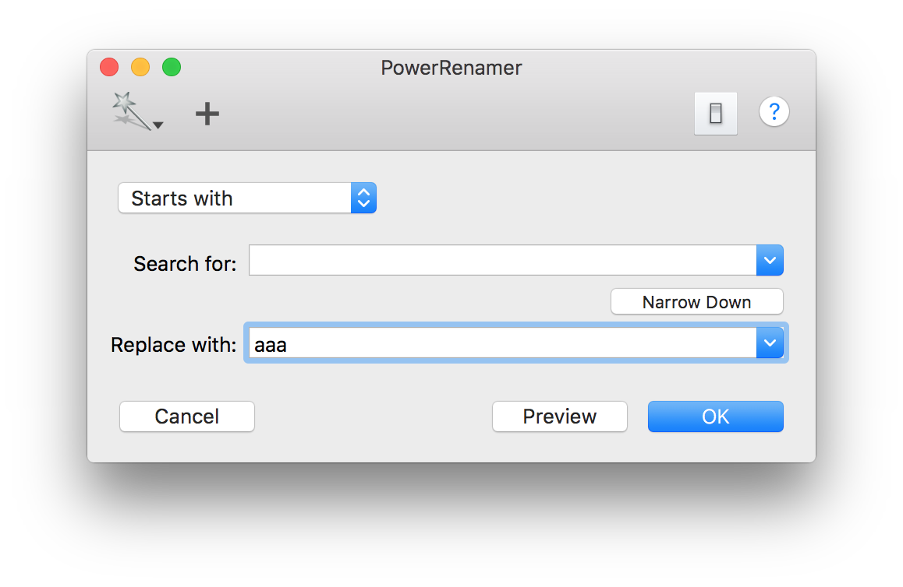

通常、PowerRenamer は Finder で選択されているファイルを対象にしますが、サービスメニュー「ファイル名を変更」やアプリケーションアイコンへのドラッグ&ドロップによって、リネームするファイルを指定することができます。
サービスメニュー/ドラッグ&ドロップによってファイルを指定すると、プレビュードローワが開いて表示します。サービスメニュー/ドラッグ&ドロップによって開かれたプレビュードローワは、Finder の選択項目を取得して開いた場合と違い「OK」ボダンが押されるまで閉じません。プレビュードローワに登録されているファイルに対して、絞り込み/リネームを行うことができます。テープルにファイルをドロップすると、処理するファイルを追加することができます。
